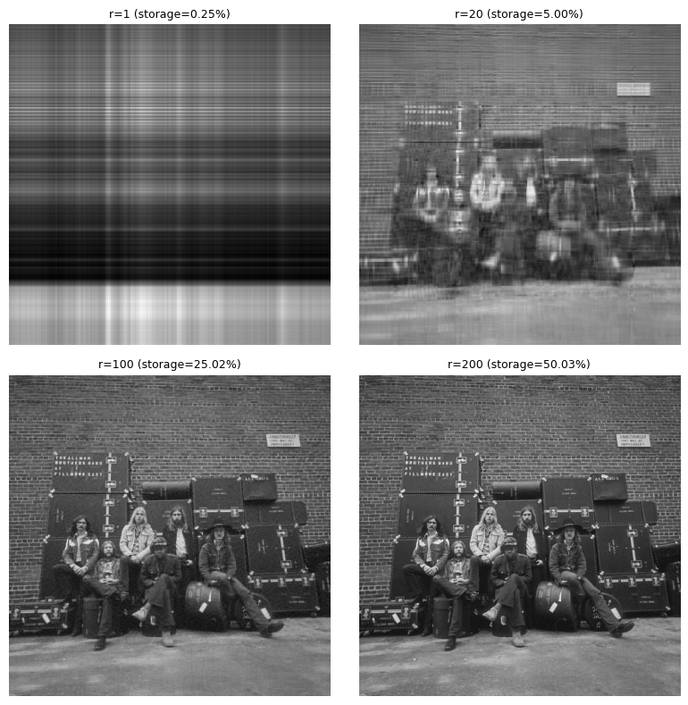

Using the Singular Value Decomposition for Image Compression
Using the singular value decomposition for image compression
Machine Learning
Python
Published
April 28, 2024
The Singular Value Decomposition (SVD) is a mathematical technique used in linear algebra to decompose a matrix into three other matrices. Specifically, for any \(n \times m\) matrix \(X\), the SVD is a factorization of the form
\[
X = U \Sigma V^{*},
\]
where:
\(X\) is \(n\times m\).
\(U\) is \(n \times n\) (unitary with orthonormal columns; columns = left signular vectors).
\(V\) is \(m \times m\) (unitary with orthonormal columns; columns = right signular vectors).
\(\Sigma\) is \(n \times m\) with real non-negative entries along the diagonal (singular values). The singular values are the square roots of the eigenvalues of \(A^{T}A\) or \(AA^{T}\).
When \(n \geq m\), \(\Sigma\) has at most \(m\) non-zero elements on the diagonal.
Rank of \(X\) = number of non-zero singular values.
In numpy:
The rows of \(V^{T}\) represent the eigenvectors of \(X^{T}X\).
The columns of \(U\) represent the eigenvectors of \(XX^{T}\).
The eigenvalues are \(\Sigma^{2}\).
The SVD provides a systematic way to determine a low-dimensional approximation to high-dimensional data in terms of dominant patterns. This technique is data-driven in that patterns are discovered purely from data, without the addition of expert knowledge or intuition.
If \(X\) is self-adjoint, (\(X = X^{*}\)), then the singular values of \(X\) are equal to the absolute values of the eigenvalues of \(X\). In Numpy, we compute the SVD as follows:
Perhaps the most useful and defining property of the SVD is that it provides an optimal low-rank approximation to a matrix \(X\). The Eckhart-Young theorem states that the optimal rank-\(r\) approximation to \(X\) in a least-squares sense is given by the rank-\(r\) SVD truncation \(\tilde X\):
\[
\underset{\tilde X, \hspace{.25em} \mathrm{s.t.} \hspace{.25em}\mathrm{rank}(\tilde X)=r}{\mathrm{argmin}} || X - \tilde X||_{F} = \tilde U \tilde \Sigma \tilde V^{*},
\]
where:
\(\tilde U, \tilde V\) represent the first \(r\) leading columns of \(U, V\).
\(\tilde \Sigma\) represents the leading \(r \times r\) sub-block of \(\Sigma\).
\(||\cdot||_{F}\) represents the Frobenius norm.
Because \(\Sigma\) is diagonal, the rank-\(r\) SVD approximation is given by the sum of \(r\) distinct rank-1 matrices:
The truncated SVD basis \(\tilde U\) provides a coordinate transformation from the high-dimensional original matrix into a lower dimensional representation.
For truncation values \(r\) that are smaller than the number of non-zero singular values (i.e., the rank of \(X\)), the truncated SVD only approximates \(X\):
\[
\tilde X \approx \tilde U \tilde \Sigma \tilde V^{*}
\]
If we choose the truncation value to keep all non-zero singular values, then \(\tilde X = \tilde U \tilde \Sigma \tilde V^{*}\) is exact.
Example: Image Compression
For the next example, we use an alternate cover photo from the Allman Brothers 1971 release At Fillmore East, shown in color and grayscale side-by-side. We’ll work with the grayscale image going forward since it limits us to two dimensions:
Next we generate successive rank-\(r\) approximations of the original image, showing the storage requirement of each rank-\(r\) approximation.
# Grayscale image.X = img# Run SVD on grayscale image X. U, S, Vt = np.linalg.svd(X, full_matrices=False)# Convert signular values array to full matrix. S = np.diag(S) # Rank-r approximations to evaluate. ranks = [1, 20, 100, 200,]# len(S)]# Matplotlib indices. indices = [(0, 0), (0, 1), (1, 0), (1, 1)]# Number of values associated with original image.total_nbr_vals = np.prod(X.shape)fig, ax = plt.subplots(2, 2, tight_layout=True, figsize=(8, 8))for r, (ii, jj) inzip(ranks, indices):# Compute rank-r approximation of X. Xr = U[:, :r] @ S[:r, :r] @ Vt[:r, :]# Compute storage or rank-r approximation vs. full image. rank_r_nbr_vals = np.prod(U[:, :r].shape) + r + np.prod(Vt[:r, :].shape) rank_r_storage = rank_r_nbr_vals / total_nbr_vals# Display rank-r approximation. ax[ii, jj].imshow(Xr, cmap=plt.cm.gray) ax[ii, jj].set_title(f"r={r:,.0f} (storage={rank_r_storage:.2%})", fontsize=9) ax[ii, jj].set_axis_off()plt.show()

A rank-100 approximation provides a decent representation of the original. At rank-200, there is virtually no difference between the original and the approximation. In practice, we could store U[:, :200], S[:200, :200] and Vt[:200, :] separately, then compute the matrix product prior to rendering the image. Doing so reduces the storage requirements by a factor of 2.
We can plot the magnitude of the singular values along with the cumulative proportion to assess how much variation in the original image is captured for a given rank-\(r\) approximation:
The rank-100 approximation accounts for ~60% of the cumulative sum of singular values. By rank-200, the approximation is closer to 80%. For completeness, we also show that a rank-800 approximation is able to recover the original image fully, since it is using all singular values and vectors (the original grayscale image was 800 x 800). The benefit of using SVD for image compression lies in its ability to prioritize and retain the most significant features of the image data, while excluding less significant features.
Note that much of this analysis is based on Chapter 1 of Steve Brunton’s Data-Driven Science and Engineering, which is an excellent resource for practicing Data Scientists. Be sure to pickup your own copy, as the second edition was recently released.